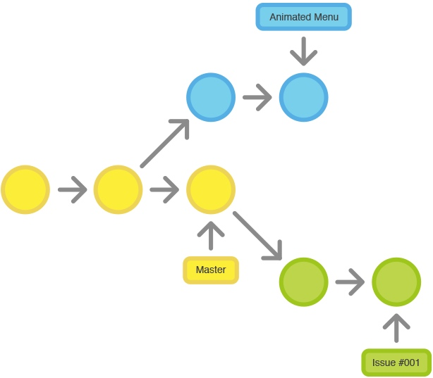
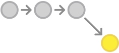
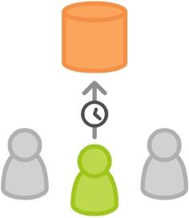
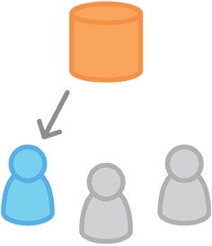
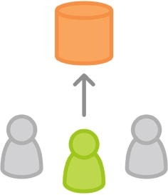
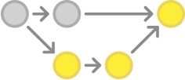

概述

一旦你玩转了集中式工作流，在开发过程中可以很简单地加上功能分支，用来鼓励开发者之间协作和简化交流。
功能分支工作流背后的核心思路是所有的功能开发应该在一个专门的分支，而不是在 master 分支上。这个隔离可以方便多个开发者在各自的功能上开发而不会弄乱主干代码。另外，也保证了 master 分支的代码一定不会是有问题的，极大有利于集成环境。
功能开发隔离也让 pull requests 工作流成功可能，pull requests 工作流能为每个分支发起一个讨论，在分支合入正式项目之前，给其它开发者有表示赞同的机会。另外，如果你在功能开发中有问题卡住了，可以开一个 pull requests 来向同学们征求建议。这些做法的重点就是，pull requests 让团队成员之间互相评论工作变成非常方便！
工作方式
功能分支工作流仍然用中央仓库，并且 master 分支还是代表了正式项目的历史。但不是直接提交本地历史到各自的本地 master 分支，开发者每次在开始新功能前先创建一个新分支。功能分支应该有个有描述性的名字，比如 animated-menu-items 或 issue-#1061，这样可以让分支有个清楚且高聚焦的用途。
在 master 分支和功能分支之间，Git 是没有技术上的区别，所以开发者可以用和集中式工作流中完全一样的方式编辑、暂存和提交修改到功能分支上。
另外，功能分支也可以（且应该）push 到中央仓库中。这样不修改正式代码就可以和其它开发者分享提交的功能。由于 master 仅有的一个『特殊』分支，在中央仓库上存多个功能分支不会有任何问题。当然，这样做也可以很方便地备份各自的本地提交。
Pull Requests
功能分支除了可以隔离功能的开发，也使得通过 Pull Requests 讨论变更成为可能。一旦某个开发完成一个功能，不是立即合并到 master，而是 push 到中央仓库的功能分支上并发起一个 Pull Request 请求去合并修改到 master。在修改成为主干代码前，这让其它的开发者有机会先去 Review 变更。
Code Review 是 Pull Requests 的一个重要的收益，但 Pull Requests 目的是讨论代码一个通用方式。你可以把 Pull Requests 作为专门给某个分支的讨论。这意味着可以在更早的开发过程中就可以进行 Code Review。比如，一个开发者开发功能需要帮助时，要做的就是发起一个 Pull Request，相关的人就会自动收到通知，在相关的提交旁边能看到需要帮助解决的问题。
一旦 Pull Request 被接受了，发布功能要做的就和集中式工作流就很像了。首先，确定本地的 master 分支和上游的 master 分支是同步的。然后合并功能分支到本地 master 分支并 push 已经更新的本地 master 分支到中央仓库。
示例
下面的示例演示了如何把 Pull Requests 作为 Code Review 的方式，但注意 Pull Requests 可以用于很多其它的目的。
小红开始开发一个新功能

在开始开发功能前，小红需要一个独立的分支。使用下面的命令新建一个分支：
git checkout -b marys-feature master
这个命令检出一个基于 master 名为 marys-feature 的分支，Git 的 -b 选项表示如果分支还不存在则新建分支。这个新分支上，小红按老套路编辑、暂存和提交修改，按需要提交以实现功能：
git status
git add
git commit
小红要去吃个午饭

早上小红为新功能添加一些提交。去吃午饭前，push 功能分支到中央仓库是很好的做法，这样可以方便地备份，如果和其它开发协作，也让他们可以看到小红的提交。
git push -u origin marys-feature
这条命令 push marys-feature 分支到中央仓库（origin），-u 选项设置本地分支去跟踪远程对应的分支。设置好跟踪的分支后，小红就可以使用 git push 命令省去指定推送分支的参数。
小红完成功能开发
小红吃完午饭回来，完成整个功能的开发。在合并到 master 之前，她发起一个 Pull Request 让团队的其它人知道功能已经完成。但首先，她要确认中央仓库中已经有她最近的提交：
然后，在她的 Git GUI 客户端中发起 Pull Request，请求合并 marys-feature 到 master，团队成员会自动收到通知。Pull Request 很酷的是可以在相关的提交旁边显示评注，所以你可以很对某个变更集提问。
小黑收到 Pull Request

小黑收到了 Pull Request 后会查看 marys-feature 的修改。决定在合并到正式项目前是否要做些修改，且通过 Pull Request 和小红来回地讨论。
小红再做修改

要再做修改，小红用和功能第一个迭代完全一样的过程。编辑、暂存、提交并push更新到中央仓库。小红这些活动都会显示在 Pull Request 上，小黑可以断续做评注。
如果小黑有需要，也可以把 marys-feature 分支拉到本地，自己来修改，他加的提交也会一样显示在 Pull Request 上。
小红发布她的功能

一旦小黑可以的接受 Pull Request，就可以合并功能到稳定项目代码中（可以由小黑或是小红来做这个操作）：
git checkout master
git pull
git pull origin marys-feature
git push
无论谁来做合并，首先要检出 master 分支并确认是它是最新的。然后执行 git pull origin marys-feature 合并 marys-feature 分支到和已经和远程一致的本地 master 分支。你可以使用简单 git merge marys-feature 命令，但前面的命令可以保证总是最新的新功能分支。最后更新的 master 分支要重新 push 回到 origin。
这个过程常常会生成一个合并提交。有些开发者喜欢有合并提交，因为它像一个新功能和原来代码基线的连通符。但如果你偏爱线性的提交历史，可以在执行合并时 rebase 新功能到 master 分支的顶部，这样生成一个快进（fast-forward）的合并。
一些 GUI 客户端可以只要点一下『接受』按钮执行好上面的命令来自动化 Pull Request 接受过程。如果你的不能这样，至少在功能合并到 master 分支后能自动关闭 Pull Request。
与此同时，小明在做和小红一样的事
当小红和小黑在 marys-feature 上工作并讨论她的 Pull Request 的时候，小明在自己的功能分支上做完全一样的事。
通过隔离功能到独立的分支上，每个人都可以自主的工作，当然必要的时候在开发者之间分享变更还是比较繁琐的。
总结
到了这里，但愿你发现了功能分支可以很直接地在集中式工作流的仅有的 master 分支上完成多功能的开发。另外，功能分支还使用了 Pull Request，使得可以在你的版本控制 GUI 客户端中讨论某个提交。
功能分支工作流是开发项目异常灵活的方式。问题是，有时候太灵活了。对于大型团队，常常需要给不同分支分配一个更具体的角色。GitFlow 工作流是管理功能开发、发布准备和维护的常用模式。
本文由 Sajor
创作，采用 知识共享署名4.0 国际许可协议进行许可
本站文章除注明转载/出处外，均为本站原创或翻译，转载前请务必署名
最后编辑时间为: 2021-07-02T01:02:40+08:00